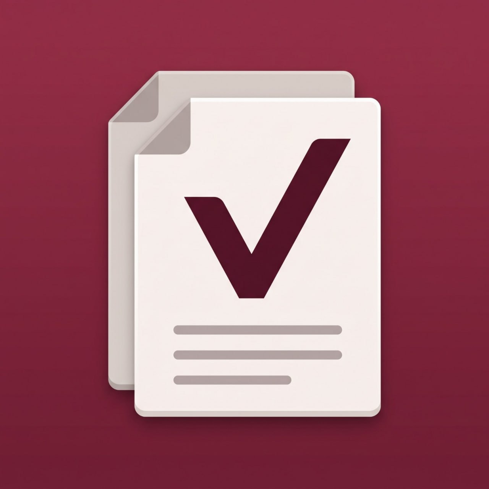

Belgelerinizi kamera, galeri veya cihaz dosyalarından ekleyin.

Belge asistanı · Yakında · Yalnızca AndroidVaultify: Belge Asistanı
Belgelerinizi düzenleyin, önemli tarihleri zamanında hatırlayın. Vaultify; sözleşmelerinizi, poliçelerinizi, garanti belgelerinizi, araç evraklarınızı ve takip etmek istediğiniz diğer belgeleri tek yerde düzenlemenize yardımcı olan kişisel belge asistanıdır.
GOOGLE PLAYYakında

Esnek belge düzeni
Her belge farklıdır.
Vaultify, hangi bilgilerin yer alacağını ve nasıl sıralanacağını seçmenize imkân verir. Hazır formatlardan birini kullanın veya kişisel ya da profesyonel ihtiyaçlarınıza uygun özel bir format oluşturun.
Kendi klasörlerinizi kullanın; hazır belge formatlarından yararlanın veya özel formatlar oluşturun.
Özel bilgiler, tarihler, notlar, parasal değerler, sayılar ve birimler ekleyin.
Her belge için birden fazla hatırlatıcı kurun; tam tarih ve saati ya da önemli bir tarihten önceki zamanı seçin.
Belgeyle ilgili gelişmeleri tarih-saat damgalı süreç notları olarak saklayın.
Belge başlıkları, bilgi alanları ve süreç notları içerisinde arama yapın.
Verilerinizi yedekleyin ve gerektiğinde geri yükleyin.
Hesap oluşturmadan, zorunlu internet bağlantısı veya reklam olmadan kayıtlarınıza erişin.
Belgeleriniz düzenli, önemli tarihleriniz kontrolünüz altında.
Vaultify ile belgelerinizi düzenleyin ve her önemli tarihi takip edin.